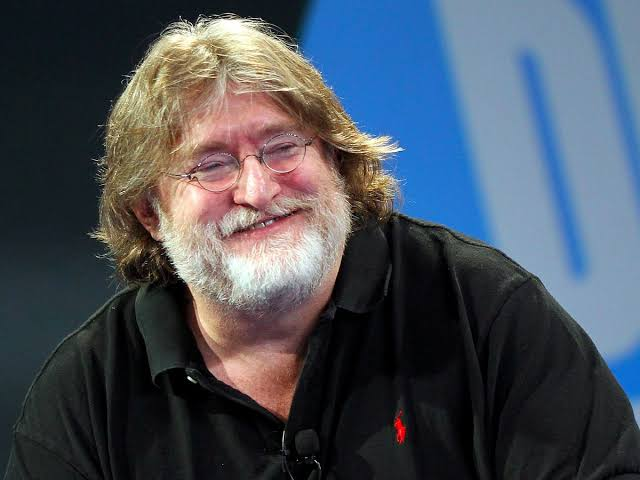

About Gabe Newell
Gabe Newell (born 1962) is an American video game developer and businessman, also known by the nickname Gaben. He was born in Aspen, Colorado, and grew up in Davis, California. He is best known for co-founding Valve and leading the development of Steam, a digital distribution platform for PC games. He is the president of Valve, the company behind Half-Life, Portal, and Counter-Strike.

Important Events
- 1962 - Born in Aspen, Colorado.
- Early 1980s - Left Harvard University to join Microsoft.
- 1996 - Left Microsoft and co-founded Valve with Mike Harrington.
- 1998 - Valve released its first game, Half-Life.
- 2003 - Steam was launched.
- 2013 - Received the BAFTA Fellowship.
Key Contributions
- Co-founding Valve Corporation
- Steam digital distribution platform
- Half-Life (1998)
- Valve games such as Counter-Strike, Portal, and Team Fortress